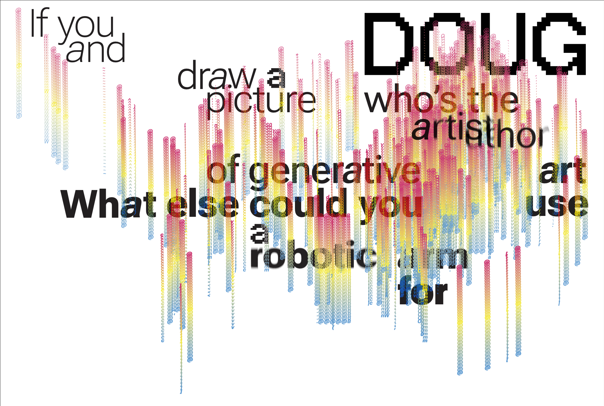
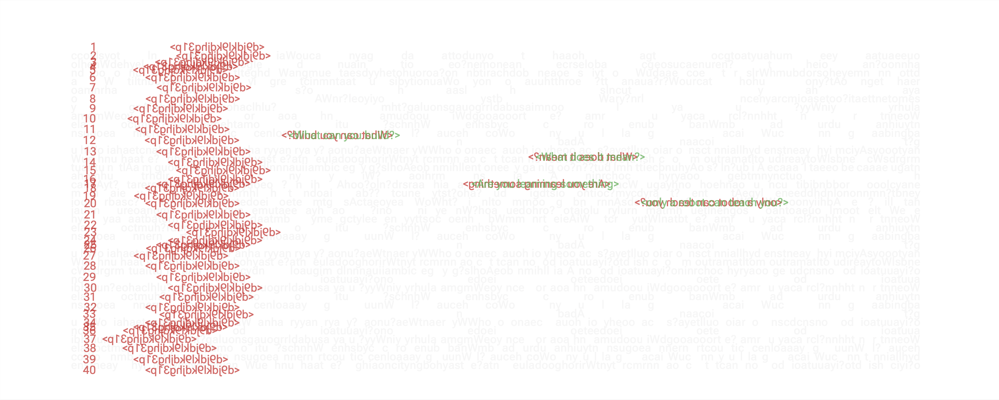
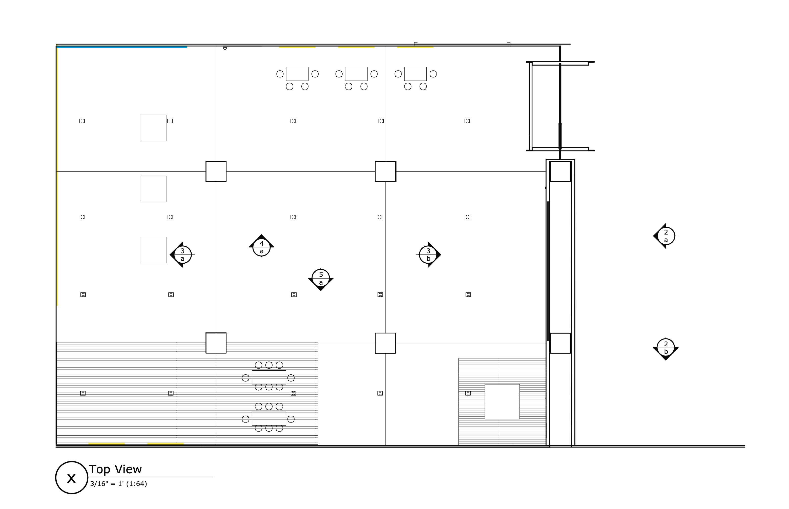
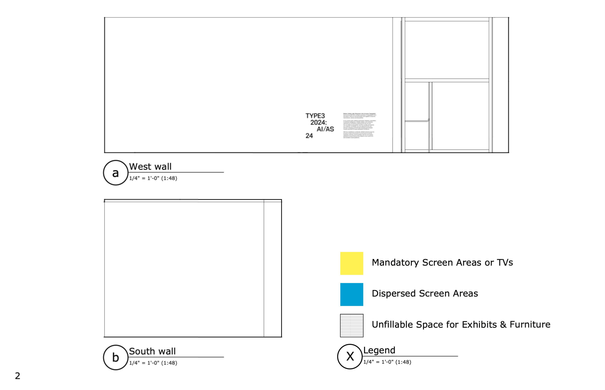
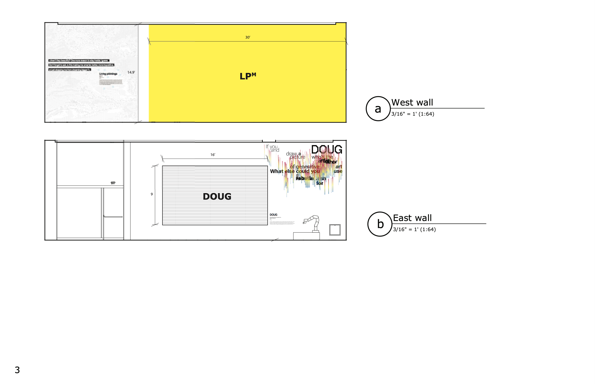
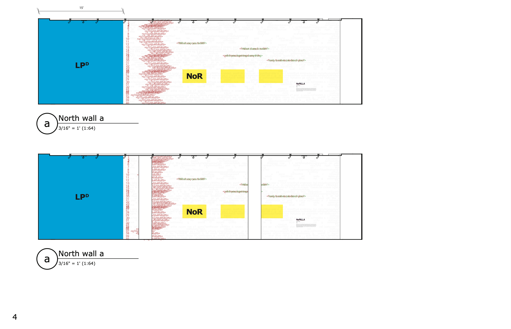
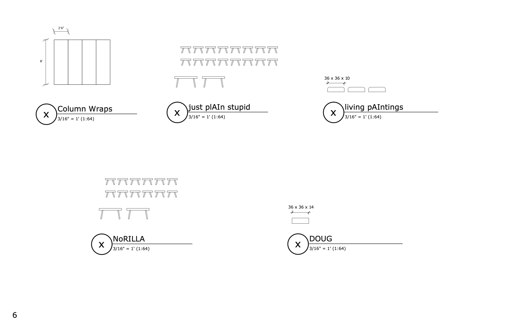

—nandini gandhi
Graphic Designer
1. Projects
- 9pm
- Data Physicalization
- Visual Explainer
- Syn-Aesthetic
- Parametrics+Generation
- Eclipsia
- Observations (My Process?)
- Hues of Persuation
- Exhibition
2. Archives
3. Info & Contact
The Exhibition focuses on the traditional functions of typography to integrate information, create legibility, sequence, lend ‘voice,’ and bestow credibility. Text typography is essentially a subtle activity and a circumscribed medium, but there is nonetheless a great deal of room to maneuver within this context.
I used the following softwares and tools to create this piece of work:
— Adobe Photoshop
— Adobe Illustrator
— Adobe Indesign
— ASCII Art Generator
The topic for this exhibiton was Artificial Stupidity and we were tasked to make a typographic structure that we would
later have to follow in all the materials of our exhibition. The exhibition highlights some of the most bizarre things that
incorporate AI and attempts to be an exhibition for children. The general concept of the exhibition was layering though distortion
and the incorporation of light. Here are the individual wall graphics:




Here are the wall graphics within the elevation:





